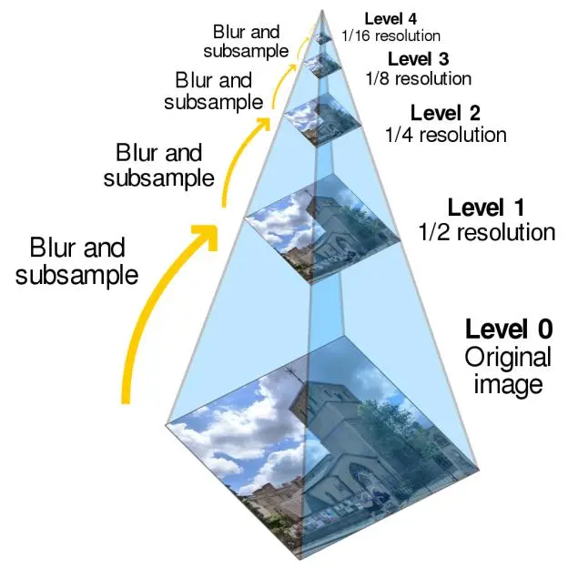
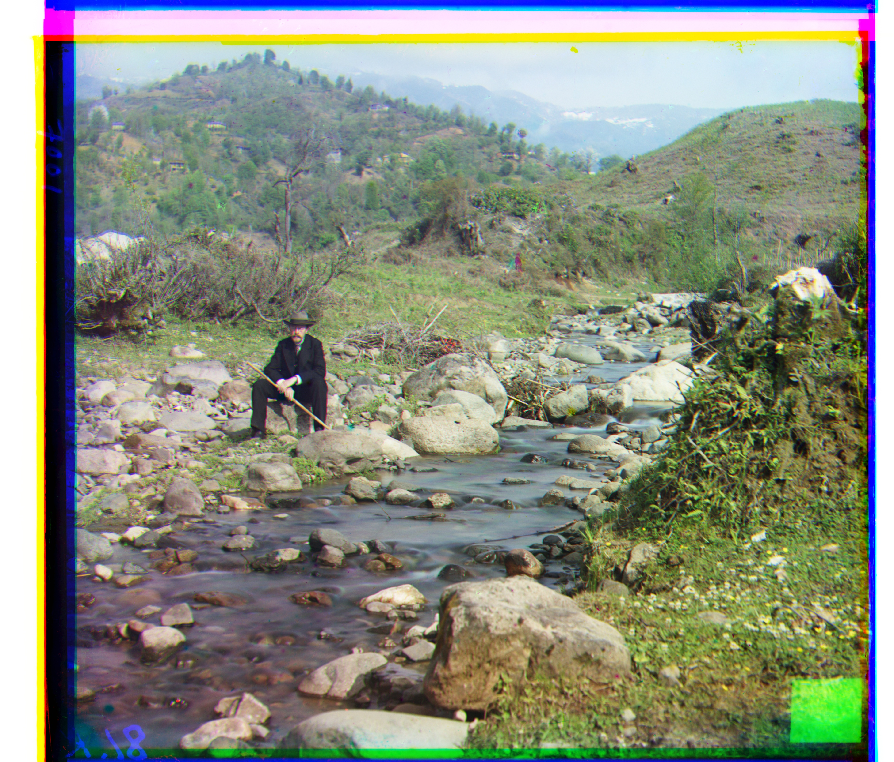

CS 180 Project 1: Images of the Russian Empire
Colorizing the Prokudin-Gorskii Photo Collection
Yuqi Tang
OverView
Sergei Mikhailovich Prokudin-Gorskii (1863–1944) was a pioneering Russian photographer, best known for his early color photography,namely the Prokudin-Gorskii Photo Collection. In this photo collection, he captured three separate monochrome images of the same scene through red, green, and blue filters, which allowed a full-color image to be created when the three layers were combined.
In this project, we aimed to use digitized images of Prokudin-Gorskii glass plates and modern image processing techniques to automatically generate color images with as few visual artifacts as possible.
Approach
I assumed a simple (x,y) translation model is sufficient for proper alignment. I use the blue channel image as the reference image and try to move the red channel image and the green channel image to match the blue channel image. I start with a simple but inefficient method, namely search over the window of [-15, 15] x [-15, 15] of displacements and calculate the similarity between the two channel images. I use Normalized Cross Correlation(NCC) as the similarity and select the displacement with the best similarity as the best displacement. After that, I apply the corresponding displacements to the images of the two channels respectively to create a full-color image.
During the experiment, I discovered that image edges adversely affect the calculation of the optimal displacement. Therefore, I cropped 5% of both sides of the image and then calculated the similarity.
However, this algorithm is very inefficient when processing high-resolution images like .tifs. This is because for high-resolution images the algorithm needs to search a much larger window to find the best displacement. This can take anywhere from a few minutes to a few hours.

pyramid search algorithm.jpg
Thus, a pyramid search algorithm is used to process hi-res images. This method build a pyramid of progressively lower resolution images from the original images. It starts by searching through the best displacement at the coarsest level and then refine the search result by moving down the pyramid. Since you know the optimal displacement on the coarser image, you only need to search a limited area to get the optimal displacement on the current image. This refine procedure will continue until reaching the original resolution and acquire the optimal displacement.
In this project, I downscale images by some power of 2 until they are under 800*800 pixels. Then, I align the smallest image by searching over the window[-width*5%,width*5%] x [-height*5%,height*5%] to get the best displacement (dx,dy). After that, I scale up the image and search in a limited range, namely [2*dx-2,2*dx+2] X [2*dy-2,2*dy+2] to find the best displacement of current image. I continue this process until acquire the optimal displacement of the original image. After synthesis the full-color image, I cropped 7% of both sides of the them to get better visual effects.
Bells & Whistles
In order to further improve the quality of the resulting color pictures, I tried to use the gradient image of the original image instead of the original image to calculate the optimal displacement.I use the sobel operator to process the original images and obtain their gradient images, which can better outline the boundaries of the shapes in the original images without being disturbed by brightness. This method gives better results on most .tifs.
This method has achieved remarkable results on the following images:
emir.tif (non sobel)
emir.tif (sobel)
lady.tif (non sobel)
lady.tif (sobel)
sculpture.tif (non sobel)
sculpture.tif (sobel)
It can be noticed that using the image processed by the sobel operator for matching can get better output results.
Results
Displacement are listed as (dx,dy), dx reprensent the displacement in width and dy reprensent the displacement in height.

cathedral.jpg (original non sobel) G(2,5) R(3,12)

cathedral.jpg (cropped non sobel) G(2,5) R(3,12)
cathedral.jpg (sobel) G(2,5) R(3,12)
church.tif (original non sobel) G(0,24) R(-6,58)
church.tif (cropped non sobel) G(0,24) R(-6,58)
church.tif (sobel) G(4,24) R(-4,56)
emir.tif (original non sobel) G(24,48) R(64,100)
emir.tif (cropped non sobel) G(24,48) R(64,100)
emir.tif (sobel) G(24,48) R(40,108)
harvesters.tif (original non sobel) G(18,60) R(16,124)
harvesters.tif (cropped non sobel) G(18,60) R(16,124)
harvesters.tif (sobel) G(20,60) R(16,128)
icon.tif (original non sobel) G(16,40) R(22,88)
icon.tif (cropped non sobel) G(16,40) R(22,88)
icon.tif (sobel) G(16,44) R(24,88)
lady.tif (original non sobel) G(8,54) R(12,108)
lady.tif (cropped non sobel) G(8,54) R(12,108)
lady.tif (sobel) G(12,52) R(8,116)
melons.tif (original non sobel) G(8,80) R(12,176)
melons.tif (cropped non sobel) G(8,80) R(12,176)
melons.tif (sobel) G(12,80) R(12,176)

monastery.jpg (original non sobel) G(2,-3) R(2,3)

monastery.jpg (cropped non sobel) G(2,-3) R(2,3)
monastery.jpg (sobel) G(2,-3) R(2,3)
onion_church.tif (original non sobel) G(26,52) R(37,108)
onion_church.tif (cropped non sobel) G(26,52) R(37,108)
onion_church.tif (sobel) G(28,52) R(36,108)

sculpture.tif (original non sobel) G(-11,33) R(-26,140)
sculpture.tif (cropped non sobel) G(-11,33) R(-26,140)
sculpture.tif (sobel) G(-10,34) R(-26,140)

self_portrait.tif (original non sobel) G(28,80) R(32,176)
self_portrait.tif (cropped non sobel) G(28,80) R(32,176)
self_portrait.tif (sobel) G(24,72) R(36,172)

three_generations.tif (original non sobel) G(14,54) R(10,112)
three_generations.tif (cropped non sobel) G(14,54) R(10,112)
three_generations.tif (sobel) G(12,48) R(12,108)

tobolsk.jpg (original non sobel) G(2,3) R(3,6)
tobolsk.jpg (cropped non sobel) G(2,3) R(3,6)

tobolsk.jpg (sobel) G(2,3) R(3,6)
train.jpg (original non sobel) G(4,44) R(32,88)
train.jpg (cropped non sobel) G(4,44) R(32,88)
train.jpg (sobel) G(8,44) R(32,88)